Usage Guide
Everything you need to browse, search and decode Kafka messages with KafkaLens.
🎬 Video tour
A walkthrough of the most common tasks in under 90 seconds.
🏗️ Connect a cluster
1. Add the cluster
- Open Cluster → Edit Clusters (Ctrl+E).
- On the Direct Clusters tab click Add.
- Enter a name and the bootstrap servers, e.g.
localhost:9092or a comma-separated list such asbroker-1:9092,broker-2:9092. - Click OK, then Save.
The coloured dot next to each cluster shows its connection status: reachable, unreachable, not checked yet. Untick Enabled to hide a cluster without deleting it.

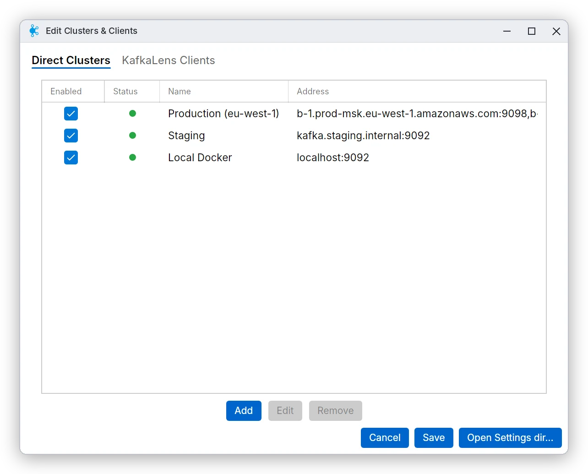

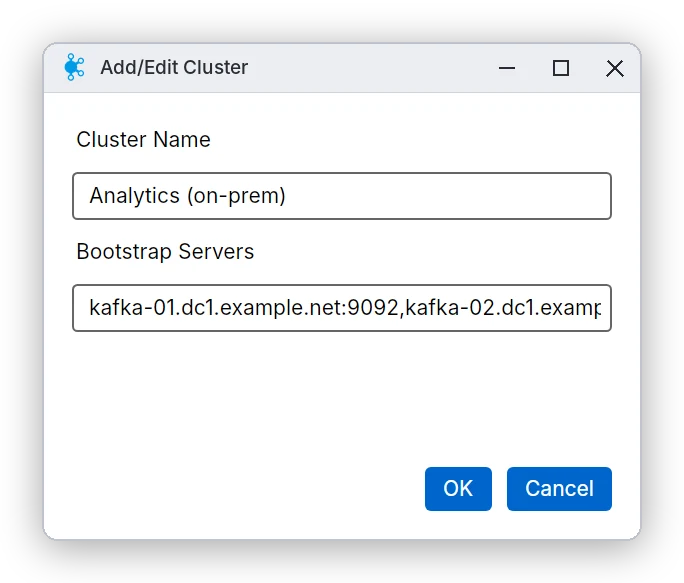
2. Open it
Choose Cluster → Open Cluster → your cluster. It opens in a new tab and its topics appear on the left. Open tabs are restored the next time you start KafkaLens (configurable in Preferences).
🧭 The main window

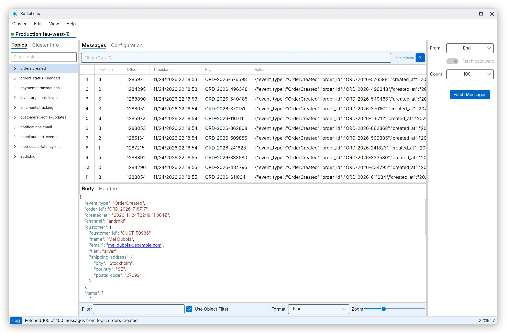
- Topics (left) — every topic in the cluster; expand one to see its partitions. Type in Filter topics… to narrow the list. Cluster Info shows the address and topic count.
- Message list (centre, top) — partition, offset, timestamp, key and a one-line value summary. Click a column header to sort; drag to resize or reorder columns.
- Message viewer (centre, bottom) — the selected message, formatted, with its headers on a second tab.
- Fetch panel (right) — where to start reading and how many messages to fetch.
- Status bar (bottom) — the latest activity; click Log to open the full application log.
📥 Fetching messages
Select a topic to read from all of its partitions, or expand it and select a single partition. The latest messages are fetched right away; use the fetch panel to change what is read, then click Fetch Messages (or press F5). Click Stop to cancel a long fetch.
| From | What it reads |
|---|---|
| End | The most recent messages (default). |
| Start | The oldest messages still retained. |
| Timestamp | Messages from a date and time (HH:mm:ss). Turn on Fetch backwards to read the messages before that time instead. |
| Offset | Partitions only: messages from an exact offset, forwards or backwards. |
Count limits how many messages are fetched (10 to 25,000 by default; the list and the default are configurable in Preferences).

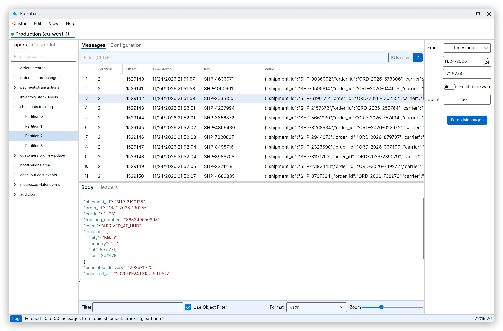
🔍 Inspecting messages
Click a message to open it in the viewer. JSON is pretty-printed and syntax-highlighted; use the Zoom slider to change the font size. The Headers tab lists every Kafka header as text.

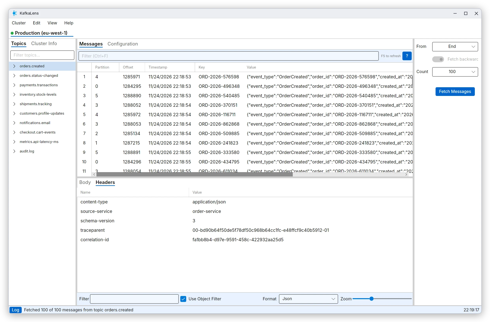
🧪 Filtering & search
Filter the message list
Type in the filter box above the list (Ctrl+F) to show only messages whose value contains your terms. Matching is case-insensitive and works on everything already fetched, so it is instant. Combine terms with boolean operators:
| Syntax | Meaning | Example |
|---|---|---|
a && b | both terms | error && !debug |
a || b | either term | CANCELLED || PAYMENT_FAILED |
!a | must not contain | !healthcheck |
( ) | grouping | user && (login || logout) |
"…" | exact phrase | "order_id":"ORD-2026-707037" |
a b | words without an operator are OR-ed | warn error |
Click ? next to the box for a quick reference.


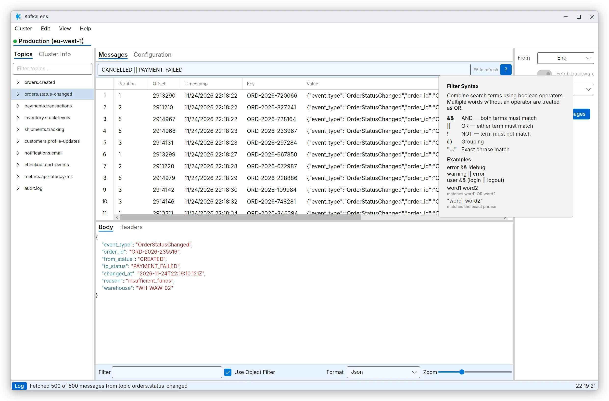
Filter inside a message
The Filter box under the viewer trims the selected message down to what you are looking for:
- With Use Object Filter on (default), KafkaLens keeps only the JSON fields whose name or value matches, together with their parent objects — ideal for large, nested payloads.
- With it off, it keeps only the matching lines of the formatted message.

method leaves just the payment-method object.🧩 Formatters & binary data
KafkaLens decodes keys and values with formatters. When you first open a topic it guesses a suitable one; built-in formatters are Json, Text and the numeric types Int8 … UInt64 (big-endian). Plugins can add more, e.g. for Avro or Protobuf.
- To change it for the whole topic, open the Configuration tab, pick a Key Formatter and Value Formatter (or click Guess), and click Save. Tick Apply to every cluster to use the same choice for this topic on all clusters.
- To view one message differently, use the Format drop-down under the viewer.
- Hide formatters you never need in Edit → Preferences → Message Format.

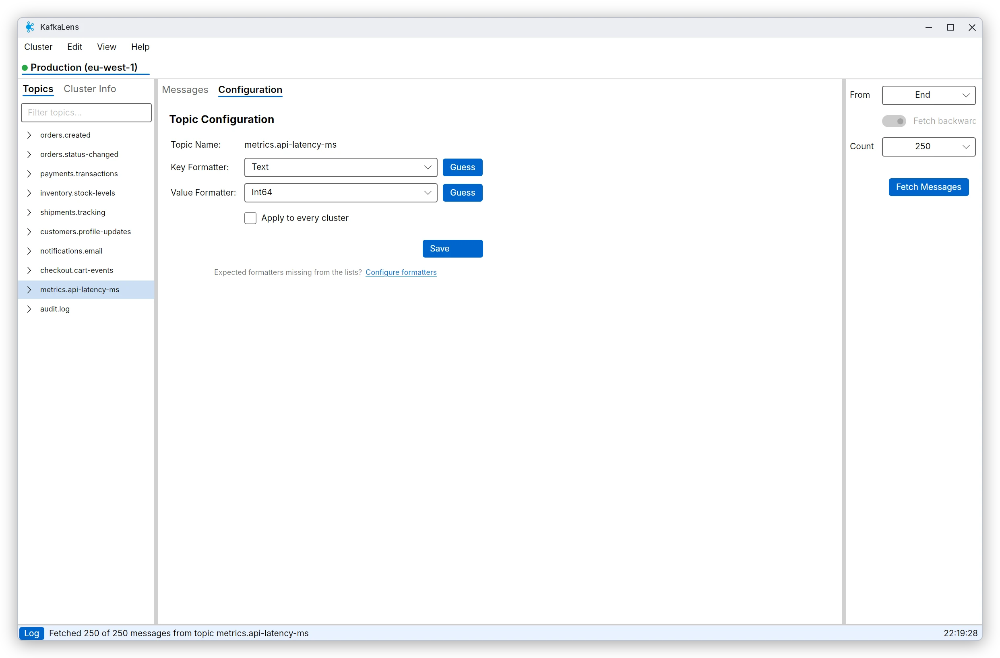


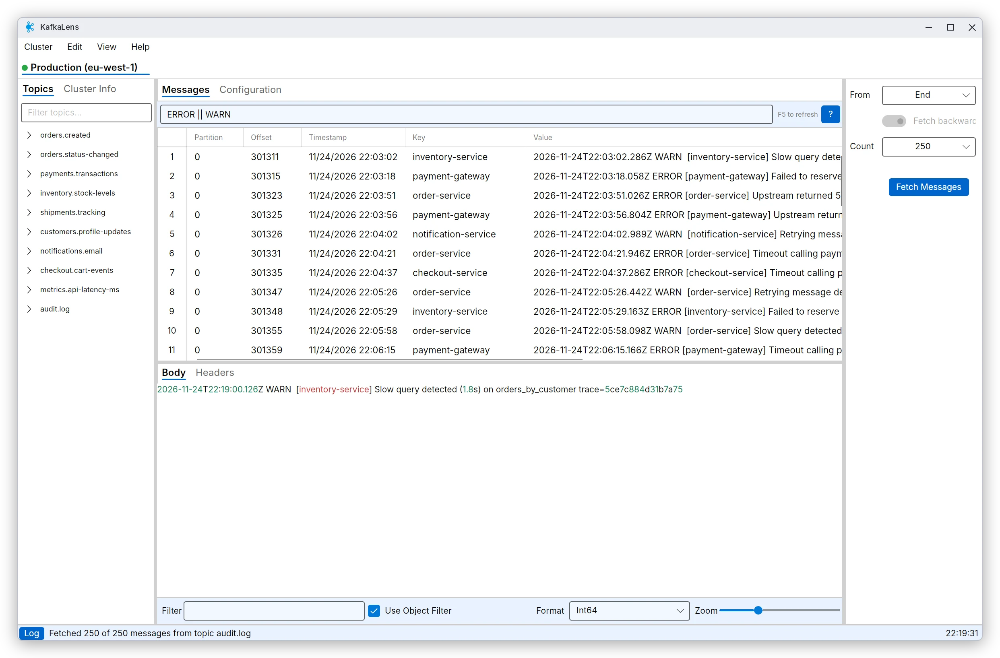
ERROR || WARN.💾 Copying & saving messages
Right-click the message list:
- Copy → Key, Value, Offset, Timestamp or All of the selected message.
- Save Selected / Save All → As RAW (
.klm, can be reopened in KafkaLens) or As Formatted (.txt, readable anywhere).
Messages are saved under <saved messages folder>/<cluster>/<topic>/<partition>/<offset>. The folder is set in Preferences → Browser; a notification after saving lets you open it.
To browse saved RAW messages later — even without access to the cluster — use Cluster → Open Saved Messages (Ctrl+O) and select the cluster's folder. It opens as a tab named <folder>(saved) with the same filtering and formatting tools.

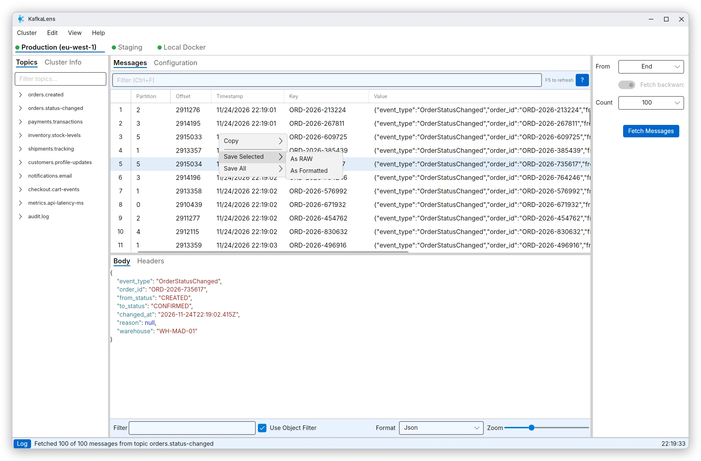
🗂️ Working with several clusters
Each opened cluster gets its own tab with its own topic selection, filters and fetch settings. Switch with Ctrl+Tab / Ctrl+Shift+Tab and close with Ctrl+W or the ✕ on the tab. You can open the same cluster more than once, e.g. to compare two topics.

🔐 Private clusters (KafkaLens backend)
If your brokers are only reachable inside a private network (VPC), run the lightweight KafkaLens gRPC backend (GrpcApi in the repository) on a host inside that network. It exposes a read-only API, so the desktop app never needs direct access to Kafka.
- Deploy the backend inside the network and list your clusters in its
cluster_info.json. By default it listens on port8080. - In KafkaLens open Edit Clusters → KafkaLens Clients, click Add, and enter a name and the backend address (e.g.
kafkalens.internal:8080) with protocolgrpc. - The clusters configured on the backend now appear under Cluster → Open Cluster alongside your direct clusters.
⚙️ Preferences, themes & plugins
Open Edit → Preferences:
- General — theme (Light, Dark, or follow the system).
- Kafka — consumer timeouts, fetch size limits and consumer group settings.
- Browser — font size, available and default fetch counts, saved-messages folder, restoring tabs on startup, and how often cluster connectivity is checked.
- Message Format — which formatters are offered for keys and values.
- Privacy — turn anonymous usage statistics on or off and see exactly what was sent (details).

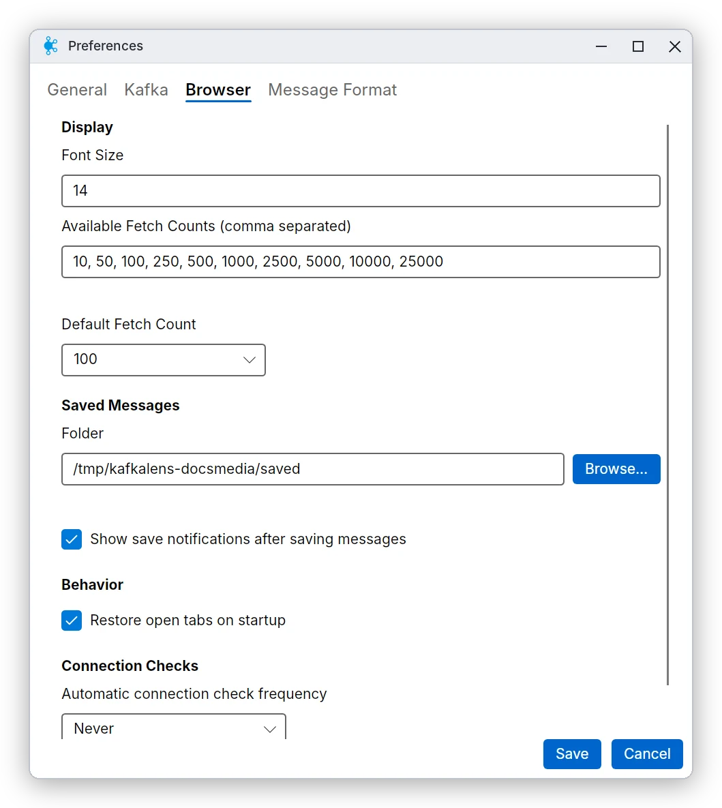

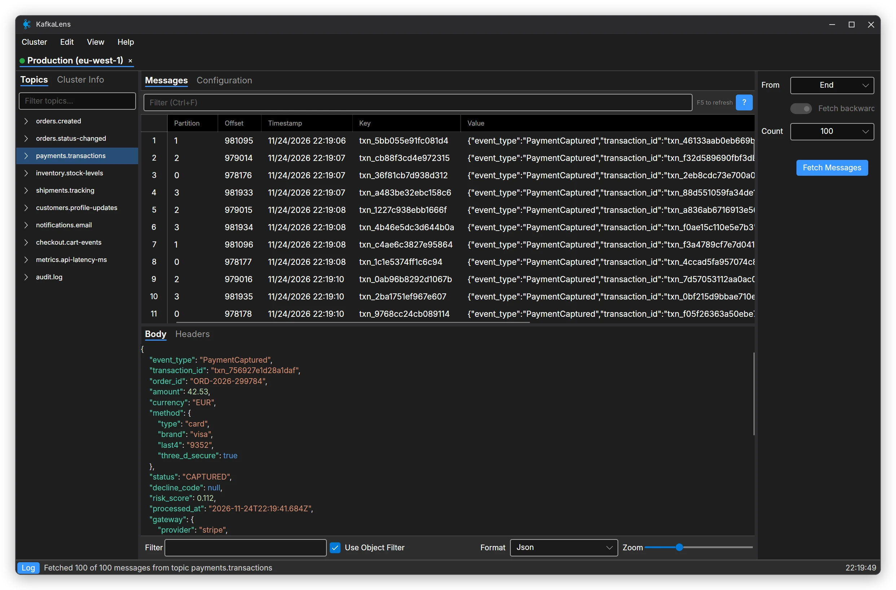
Edit → Plugin Manager installs plugins — extra formatters and themes — from plugin repositories. Want to write one? See the plugin development guide.
View → Application Log (or the Log button in the status bar) shows what KafkaLens is doing — useful when a connection fails. It can be searched, filtered and copied.

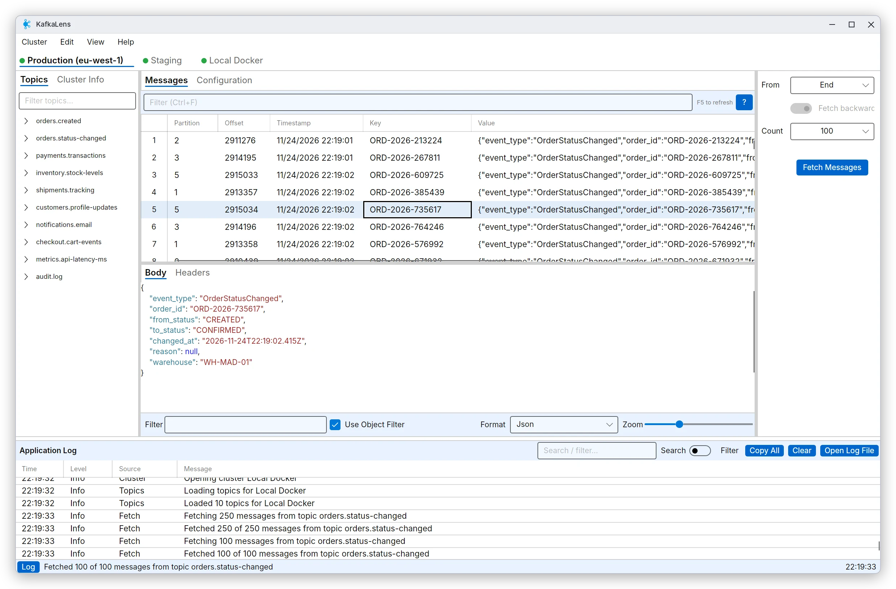
KafkaLens checks for updates automatically; turn this off or check manually from the Help menu.
⌨️ Keyboard shortcuts
| Ctrl+E | Edit clusters |
| Ctrl+O | Open saved messages |
| Ctrl+W | Close the current tab |
| Ctrl+Tab / Ctrl+Shift+Tab | Next / previous tab |
| Ctrl+F | Focus the message filter |
| F5 | Fetch again with the current settings |
❓ Need help?
Found a bug or have a feature request? Please open an issue on GitHub. Attaching the application log (Log → Open Log File) helps a lot.